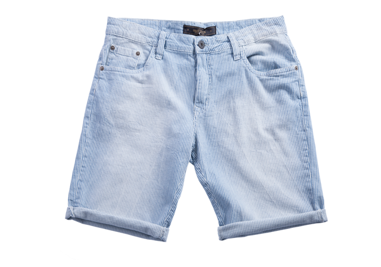
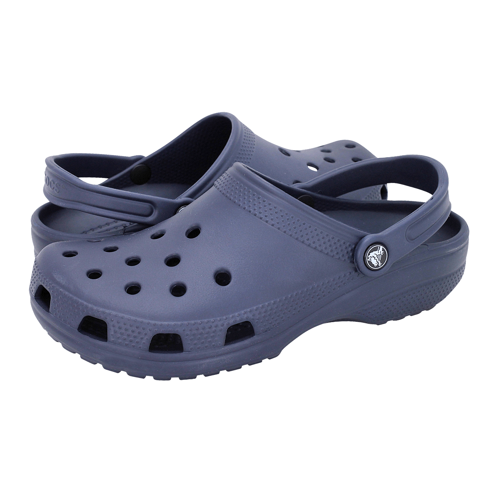

Óculos

R$20,00
PROTEÇÃO E ESTILO: Os óculos de sol são itens importantes para o dia a dia, além de proteger os olhos contra os raios nocivos do sol, compõem looks com muito estilo! Possuem diversos modelos e cores disponíveis, basta escolher o que mais te agrada e arrasar por ai!
Camisa

R$50,00
CLÁSSICA E ELEGANTE: As camisas são peças obrigatórias em qualquer guarda-roupa, pois são super fáceis de combinar e dão automaticamente aquele ar arrumado ao look. Mas se engana quem acredita que ela não pode compor looks mais descontraídos. Basta usá-la de formas diferentes, como deixar um lado solto e outro dentro da calça ou até mesmo adicionar acessórios mais pesados para um visual diferente
Tênis

R$56,99
Tênis muito confortàvel para corrida e outras práticas de esportes
Bermuda
R$50,00
O TECIDO QUE AMAMOS: O jeans é um tecido queridinho no guarda-roupa atual! Por ser feito de algodão, é mais grosso, pesado e resistente, garantindo uma modelagem no corpo mais assertiva e que valoriza todos os biotipos. Ele é encontrado em diversos produtos, como calças, saias, bermudas, shorts e até mesmo jaquetas, é extremamente versátil e curinga. Ótimo para montar looks casuais ou formais, basta usar a criatividade pois as combinações são inúmeras
Sandália
R$70,00
Garanta aconchego e estilo para seus pequenos, com a Sandália Crocs Infantil Classic Clog Kids! Desenvolvida em borracha, essa sandália Crocs oferece um material leve, resistente e extremamente confortável, ideal para ser usado diariamente. O artigo possui tira de calcanhar para um ajuste mais seguro, possui solado non-marking com frisos antiderrapantes, é supermacio, flexível, fácil de limpar, ajuste mais generoso e espaçoso através do Roomy Fit, além de contar com tecnologia Iconic Crocs Comfort TM. Compre agora!